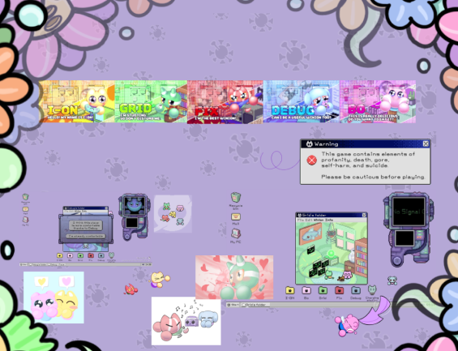

Atrás
Dawntown Studio
“Winion Virus is a pixel-art visual novel/horror game. It features
adorable and charming graphics paired with a dark fairy-tale story full of
unexpected twists. As a point-and-click adventure, your task is to fix the
errors occurring within the computer.”
Qué es Winion Virus?